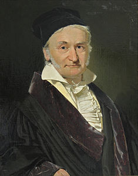

Introducción
Uno de los aportes más importantes a las Matemáticas y, en específico a la Teoría de Números, es la formalización de la Aritmética Modular que Gauss realizó en su Investigaciones sobre aritmética en Disquisitiones arithmeticae (1801). En esta obra, Gauss define la noción de congruencia entre dos enteros (módulo m); describe las propiedades de la dicha relación (congruencia) y la establece como el conjunto completo de residuos.

Gauss no sólo definió la congruencia modular, sino que también estableció reglas y propiedades que permiten simplificar cálculos y resolver problemas de una manera eficiente. Sus ideas han perdurado hasta hoy y son la base de muchos algoritmos y sistemas de seguridad que utilizamos a diario en la era digital.
A lo largo de este tutorial exploraremos cómo la aritmética de residuos nos permite:
Reducir cualquier número entero a un conjunto finito de residuos.
Realizar operaciones como suma, resta, multiplicación y división de manera eficiente en aritmética de residuos.
Comprender la congruencia modular y su aplicación en áreas como la criptografía.